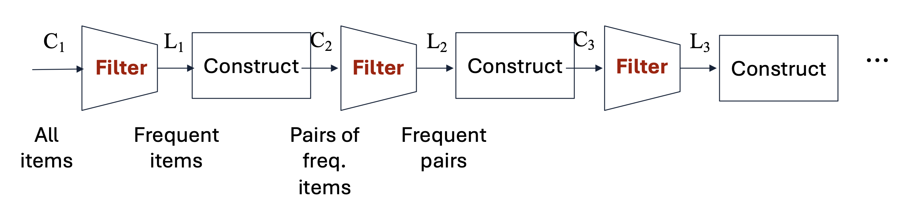
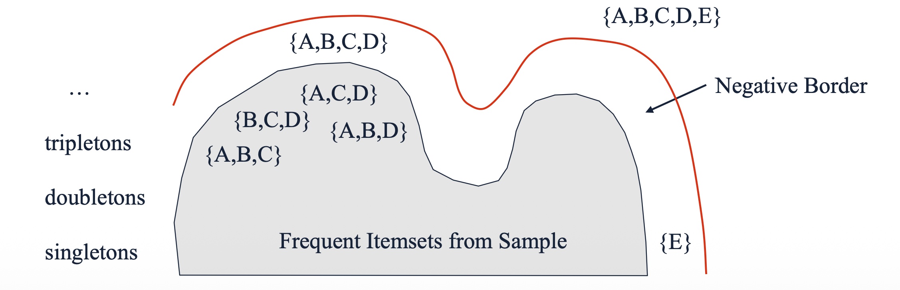

1. Introduction: 다중 패스의 한계와 속도-정확도 트레이드오프
- 지금까지 우리가 다룬 A-Priori 알고리즘이나 그 확장판(PCY 등)은 아이템 집합의 크기 \(k\)가 커질 때마다 전체 데이터셋을 새롭게 스캔해야 합니다. 즉, 후보 \(k\)-튜플 집합인 \(C_k\)를 생성하고, 이를 필터링하여 진짜 빈발 집합인 \(L_k\)를 찾는 과정(Pass)이 각 \(k\)마다 반복적으로 요구됩니다.

하지만 현실의 많은 데이터 마이닝 애플리케이션(예: 슈퍼마켓 장바구니 분석)에서는 약간의 정확도를 희생하더라도 분석 속도를 획기적으로 높이는 것이 더 유리할 때가 많습니다. 이러한 맥락에서 전체 데이터 스캔 횟수를 2회 이하(\(\le 2\) passes)로 제한하면서도 모든(혹은 대부분의) 빈발 항목 집합을 찾아내는 Limited-Pass Algorithms이 고안되었습니다.
본 포스트에서는 대표적인 세 가지 접근법인 Random Sampling, Toivonen”s Algorithm, 그리고 SON Algorithm을 차례로 살펴봅니다.
2. Random Sampling (단순 샘플링)
- 가장 직관적이고 단순한 방법은 전체 장바구니 데이터(Market baskets) 중 일부만 무작위로 추출하여 메모리 내에서 처리하는 것입니다.
2.1. 수학적 지지도 보정
- 만약 전체 데이터 중 \(p\)의 비율(\(p < 1\))만큼을 샘플링했다면, 우리가 설정했던 원래의 지지도 임계값(Support threshold) \(s\) 역시 동일한 비율로 줄여주어야 합니다. 즉, 샘플 데이터에 대한 새로운 임계값은 \(ps\)가 됩니다. 이렇게 스케일을 조정한 뒤, 메모리에 올라간 샘플 데이터를 대상으로 A-Priori나 PCY 알고리즘을 수행합니다.
2.2. 샘플링의 오류: False Positives & False Negatives
- 단일 패스만으로 끝나는 샘플링은 필연적으로 두 가지 유형의 오류를 발생시킵니다.
- False Positives (거짓 양성): 샘플 내에서는 빈발하다고 판정되었으나, 실제 전체 데이터에서는 빈발하지 않은 항목 집합입니다.
- 해결책: 전체 데이터에 대해 패스를 한 번 더 수행하여 샘플에서 찾은 후보들의 진짜 빈도를 셈으로써 완벽히 제거할 수 있습니다.
- False Negatives (거짓 음성): 실제 전체 데이터에서는 빈발하지만, 샘플에서는 우연히 적게 뽑혀 누락된 항목 집합입니다.
- 대응: 임계값을 \(ps\)보다 조금 더 낮춰서(예: \(0.9ps\)) 더 많은 후보를 포함시키면 줄일 수는 있지만, 단순 샘플링 구조상 False Negatives를 완전히 제거할 수 있는 쉬운 방법은 없습니다.
- False Positives (거짓 양성): 샘플 내에서는 빈발하다고 판정되었으나, 실제 전체 데이터에서는 빈발하지 않은 항목 집합입니다.
3. Toivonen”s Algorithm
- 샘플링의 가장 큰 문제인 False Negatives를 완벽히 제거할 수 없을까?라는 질문에서 출발한 것이 Toivonen의 알고리즘입니다. 이 알고리즘은 평균 2회의 패스만으로 어떠한 오류(거짓 양성 및 거짓 음성 모두)도 없는 정확한 결과를 도출합니다.

3.1. Pass 1: 샘플링과 Negative Border 구축
- 작은 샘플 데이터를 추출하고, 비례값인 \(ps\)보다 더 낮은 임계값(예: \(0.9ps\))을 사용하여 후보 집합을 찾습니다.
- 이때, 네거티브 보더(Negative Border)라는 특수한 안전망을 함께 구축합니다.
Definition: Negative Border (경계 집합)
어떤 항목 집합이 네거티브 보더에 속하기 위한 필요충분조건은 다음과 같습니다.
해당 집합 자체는 샘플 내에서 빈발하지 않는다.
해당 집합의 모든 직속 부분집합(Immediate subsets)은 샘플 내에서 빈발한다. 직속 부분집합이란 원소를 정확히 하나만 제거하여 만든 부분집합을 의미합니다.
[Example]
- 집합 \(\{A, B, C, D\}\)가 네거티브 보더에 포함되려면, 이 집합 자체는 비빈발이어야 하지만 그 직속 부분집합인 \(\{A, B, C\}\), \(\{B, C, D\}\), \(\{A, C, D\}\), \(\{A, B, D\}\)는 모두 빈발해야 합니다. 단일 아이템(Singleton)인 \(\{E\}\)의 경우, 공집합 \(\emptyset\)은 항상 빈발하다고 간주되므로 \(\{E\}\)가 비빈발이기만 하면 자동으로 보더에 포함됩니다.
3.2. Pass 2: 전체 데이터 검증과 종료 조건
- 두 번째 패스에서는 전체 데이터셋을 대상으로 (a) 샘플에서 빈발했던 집합과 (b) 네거티브 보더에 속한 집합의 실제 빈도를 모두 셉니다.
- 성공 (종료): 전체 데이터를 세어본 결과, 네거티브 보더의 원소 중 전체 데이터에서도 빈발한 것이 하나도 없다면 알고리즘은 즉시 종료됩니다. 샘플에서 찾은 빈발 집합 중 검증을 통과한 것들이 완벽한 정답이 됩니다.
- 실패 (재시도): 만약 네거티브 보더 원소 중 단 하나라도 전체 데이터에서 빈발하다면, 보더 바깥에 우리가 놓친 더 큰 빈발 집합이 존재할 가능성이 있습니다. 이 경우 알고리즘은 결과를 폐기하고 새로운 무작위 샘플을 뽑아 처음부터 다시 시작합니다. 확률은 낮지만 2회 이상의 패스가 발생할 수 있는 이유가 바로 이 지점 때문입니다.
3.3. 논리적 증명: 왜 Toivonen의 알고리즘은 False Negatives가 없을까?
Toivonen 알고리즘이 2번의 패스만으로 False Negatives(전체에서는 빈발하지만 누락된 항목 집합)가 전혀 없음을 보장하는 이유는 수학적 귀류법(Proof by Contradiction)을 통해 명백히 증명할 수 있습니다.
알고리즘이 전체 데이터 검증(Pass 2)을 마치고 “네거티브 보더(Negative Border) 내에 전체 데이터 기준 빈발 항목이 하나도 없으므로 종료한다”라고 선언한 상황을 가정해 보겠습니다.
이 선언이 완벽하게 안전한 이유를 다음의 증명 과정을 통해 확인해 봅시다.
1. 귀류법의 가정 (Assumption)
- 만약 전체 데이터에서는 빈발하지만, 샘플에서는 비빈발로 판정되어 우리가 완전히 놓쳐버린(누락된) 어떤 항목 집합 \(S\)가 존재한다고 가정해 봅시다.
2. 논리적 전개 (Logical Deduction)
- \(S\)가 우리의 감시망을 어떻게 빠져나갈 수 있는지, 그 부분집합들을 추적해 봅니다. 여기서는 두 가지 경우의 수 중 하나가 반드시 성립합니다.
- Case 1: \(S\)가 네거티브 보더에 포함되는 경우
- \(S\)의 직속 부분집합(Immediate subsets)들이 샘플 내에서 모두 빈발(Frequent)했다고 가정해 봅시다. 부분집합은 모두 빈발한데 자기 자신인 \(S\)는 샘플에서 비빈발하므로, 이는 네거티브 보더의 정의와 정확히 일치합니다. 따라서 \(S\)는 네거티브 보더에 속해 있어야 합니다.
- Case 2: \(S\)의 부분집합 중 일부도 샘플에서 누락된 경우
- \(S\)가 네거티브 보더를 피하려면, \(S\)의 직속 부분집합 중 최소한 하나(이를 \(T\)라고 합시다)도 샘플에서 비빈발해야 합니다. 그런데 데이터 마이닝의 단조성(Monotonicity) 원리에 의해, 상위 집합인 \(S\)가 전체 데이터에서 빈발하다면 부분집합인 \(T\) 역시 전체 데이터에서는 무조건 빈발해야 합니다. 즉, \(T\) 역시 “전체에서는 빈발하지만 샘플에서는 누락된” 또 다른 집합이 됩니다.
3. 재귀적 하강과 바닥 조건 (Recursion & Base Case)
- Case 2의 논리는 꼬리를 물고 계속 아래로 이어집니다. \(T\) 역시 네거티브 보더에 속하거나, 아니면 \(T\)의 하위 부분집합 중 또 다른 누락 집합이 존재해야 합니다.
- 이 추적을 계속해서 아래로 내려가다 보면, 결국 크기가 1인 단일 아이템(Singleton) 단계에 도달하게 됩니다. 단일 아이템의 직속 부분집합은 공집합(\(\emptyset\))이며, 공집합은 항상 빈발하다고 간주됩니다. 따라서 샘플에서 누락된(비빈발한) 단일 아이템은 무조건 네거티브 보더에 포함됩니다.
4. 최종 결론 (Conclusion)
- 위 논리를 종합하면, 전체 데이터에서 빈발하지만 샘플에서 누락된 집합 \(S\)가 존재한다면, \(S\) 자기 자신이든 혹은 그 하위 부분집합 중 하나든 최소한 하나는 무조건 네거티브 보더(Negative Border) 내부에 존재해야만 합니다.
- 그런데 우리가 Pass 2에서 전체 데이터를 검증했을 때, “네거티브 보더 내에 전체 빈발 항목이 0개”라는 것을 확인하고 알고리즘을 종료했습니다.
- 결과적으로, 네거티브 보더의 검증을 무사히 통과했다면, 애초에 우리의 가정이 틀렸음이 입증되며, 우리가 놓친 빈발 집합 \(S\)는 수학적으로 존재할 수 없습니다.